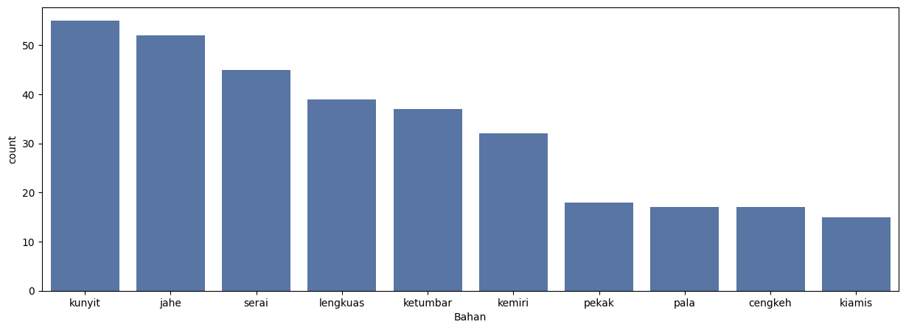
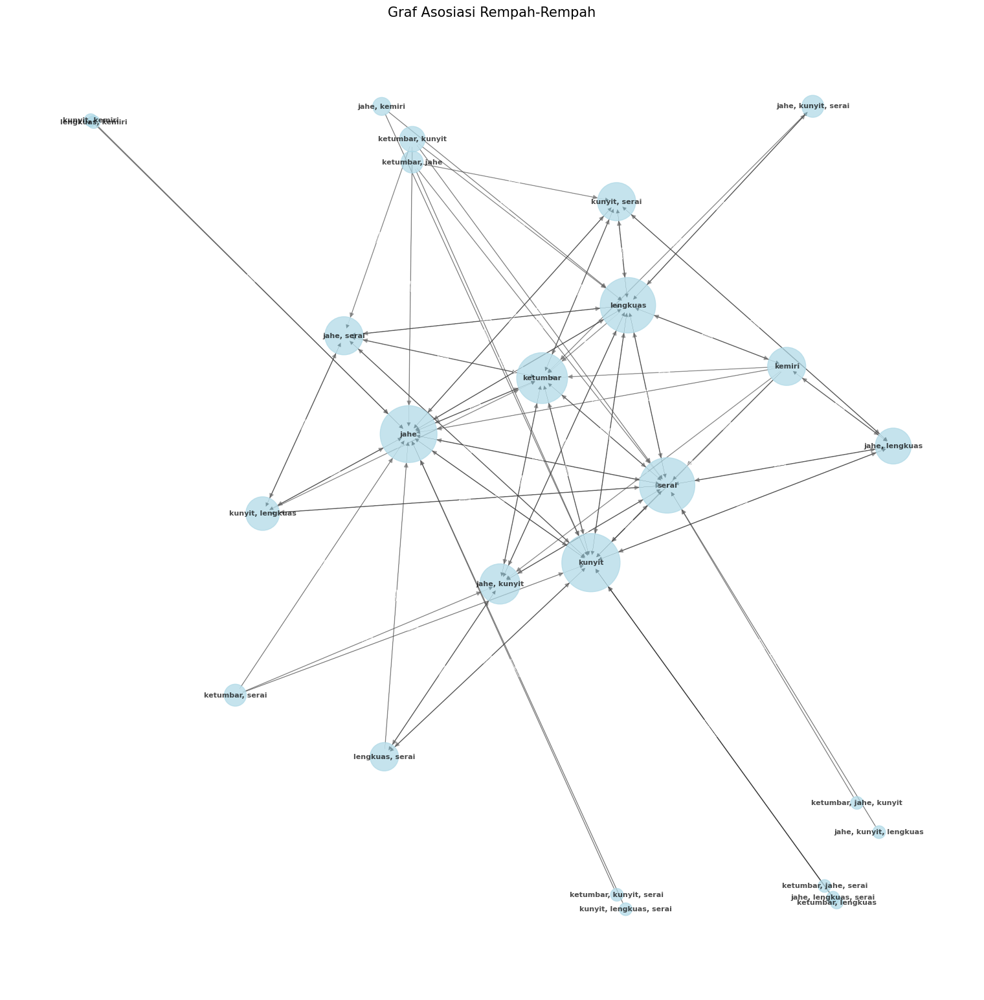
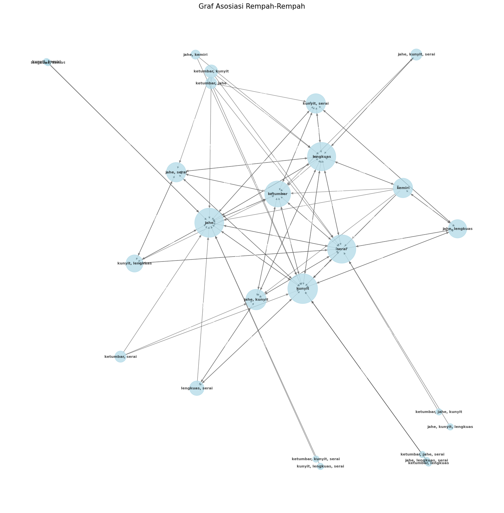

Spice Islands: A Culinary Journey
Work
Data Visualization 1
The Indonesian archipelago, with its thousands of islands and countless
ethnic groups, is a culinary wonderland. Indonesian food is celebrated for
its complex flavors and aromatic spices. These spices, sourced from the lush
forests and fertile soils of the archipelago, have not only shaped the
nation's cuisine but have also played a significant role in its history
and economy. This article will compare and contrast the use of spices in the
regional cuisine of Sumatra and the Spice Islands of Maluku, two regions
that have been at the center of the global spice trade for centuries.
The bar chart illustrates the frequency of various spices used in Indonesian
cuisine. Among the most popular spices are turmeric (kunyit), ginger (jahe),
lemongrass (serai), galangal (lengkuas), and coriander (ketumbar), each
appearing in over 30 dishes. Other commonly used spices include nutmeg
(pala), cloves (cengkeh), and cardamom (kiamis), though their usage is
slightly less frequent. This data suggests that these spices play a central
role in the flavor profiles of Indonesian cuisine, reflecting the
country's rich culinary heritage and diverse regional traditions.
The bar chart visually represents the dominant spices used in different
regions of Indonesia. Each region is assigned a unique color, and the length
of the bar indicates the frequency of a particular spice combination.
From the chart, we can observe that the most common spice combination is "kiamis, pekak, kapulaga, lada, cengkeh," which is prevalent in Aceh, Bengkulu, Jambi, and Maluku. The combination "cengkeh, pala, pekak, adas, lada" is also popular in several regions, including Jambi, Medan, and Padang. Other frequently used spice combinations include "pala, cengkeh, adas, kiamis, kapulaga" and "pala, kiamis, jintan, lada."
This analysis suggests that while there are regional variations in spice usage, certain combinations are more widespread across the Indonesian archipelago. This reflects the shared culinary heritage and cultural influences that bind these diverse regions together.
From the chart, we can observe that the most common spice combination is "kiamis, pekak, kapulaga, lada, cengkeh," which is prevalent in Aceh, Bengkulu, Jambi, and Maluku. The combination "cengkeh, pala, pekak, adas, lada" is also popular in several regions, including Jambi, Medan, and Padang. Other frequently used spice combinations include "pala, cengkeh, adas, kiamis, kapulaga" and "pala, kiamis, jintan, lada."
This analysis suggests that while there are regional variations in spice usage, certain combinations are more widespread across the Indonesian archipelago. This reflects the shared culinary heritage and cultural influences that bind these diverse regions together.
The provided graph offers a visual representation of the associations
between various spices commonly used in Indonesian cuisine. Each node on the
graph represents a unique spice combination, while the edges connecting them
indicate the frequency with which these combinations appear together in
culinary recipes. A close examination of the graph reveals several key
insights. Firstly, the central node, labeled "ketumbar, jahe,
kunyit," emerges as a crucial hub connecting numerous other spice
combinations. This suggests that the combination of coriander, ginger, and
turmeric is a versatile and fundamental base for many Indonesian dishes.
Secondly, the graph highlights the strong association between certain spice pairs. For instance, the combination of ginger and turmeric appears frequently in conjunction with other spices, indicating their complementary flavors and widespread use. Additionally, the connections between coriander and lemongrass, as well as between galangal and turmeric, suggest synergistic relationships that enhance the overall taste profile of dishes.
Moreover, the graph reveals regional variations in spice usage. While certain spice combinations are common across multiple regions, others appear more localized. This suggests that cultural and historical factors have influenced the development of regional culinary traditions and the preferences for specific spice blends. Furthermore, the graph underscores the complexity and diversity of Indonesian cuisine. The intricate network of spice associations demonstrates the nuanced and sophisticated ways in which spices are combined to create unique and flavorful dishes.
In conclusion, the analysis of the spice association graph provides valuable insights into the culinary landscape of Indonesia. It highlights the central role of certain spice combinations, the synergistic relationships between spices, and the regional variations in spice usage. By understanding these associations, we can gain a deeper appreciation for the rich and diverse tapestry of Indonesian cuisine. Full Project
Secondly, the graph highlights the strong association between certain spice pairs. For instance, the combination of ginger and turmeric appears frequently in conjunction with other spices, indicating their complementary flavors and widespread use. Additionally, the connections between coriander and lemongrass, as well as between galangal and turmeric, suggest synergistic relationships that enhance the overall taste profile of dishes.
Moreover, the graph reveals regional variations in spice usage. While certain spice combinations are common across multiple regions, others appear more localized. This suggests that cultural and historical factors have influenced the development of regional culinary traditions and the preferences for specific spice blends. Furthermore, the graph underscores the complexity and diversity of Indonesian cuisine. The intricate network of spice associations demonstrates the nuanced and sophisticated ways in which spices are combined to create unique and flavorful dishes.
In conclusion, the analysis of the spice association graph provides valuable insights into the culinary landscape of Indonesia. It highlights the central role of certain spice combinations, the synergistic relationships between spices, and the regional variations in spice usage. By understanding these associations, we can gain a deeper appreciation for the rich and diverse tapestry of Indonesian cuisine. Full Project
Instagram
LinkedIn
@osya.ar
amrinarosyada


Data Science
NLP
Indonesian’s Spices
Text Mining
Data Visualization

 
